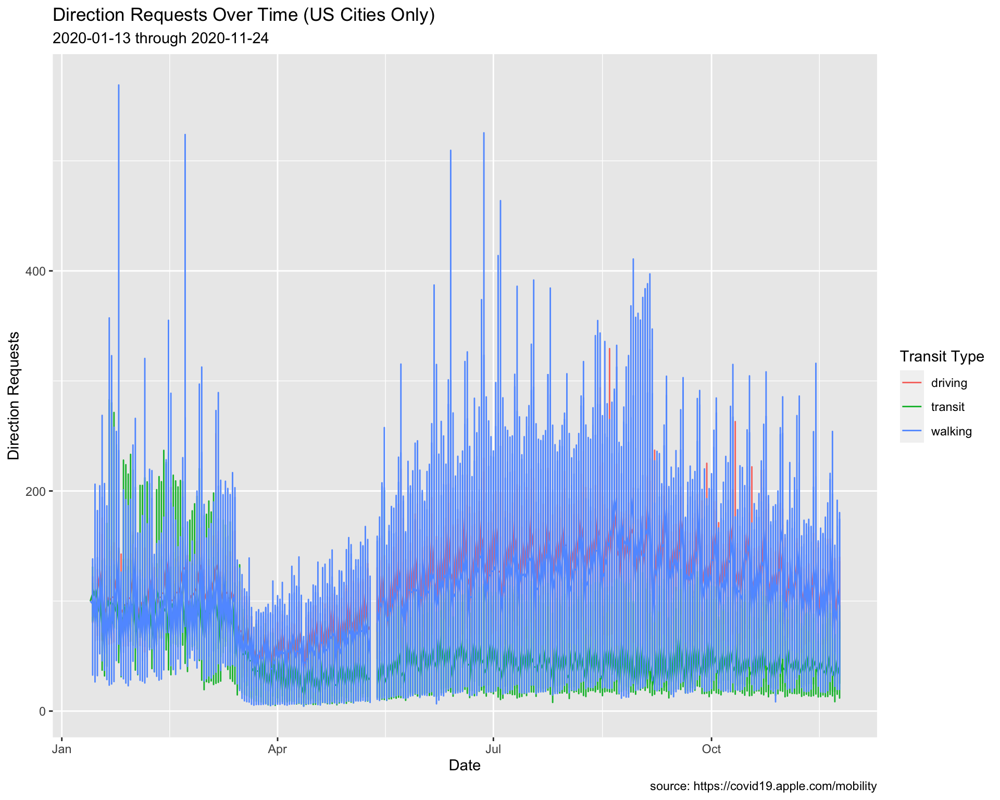
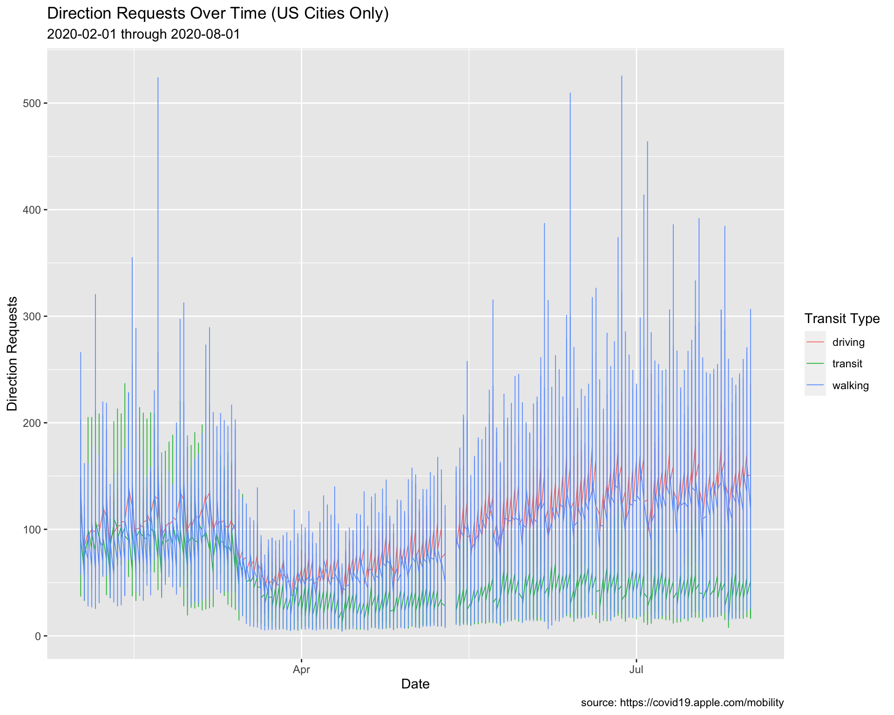
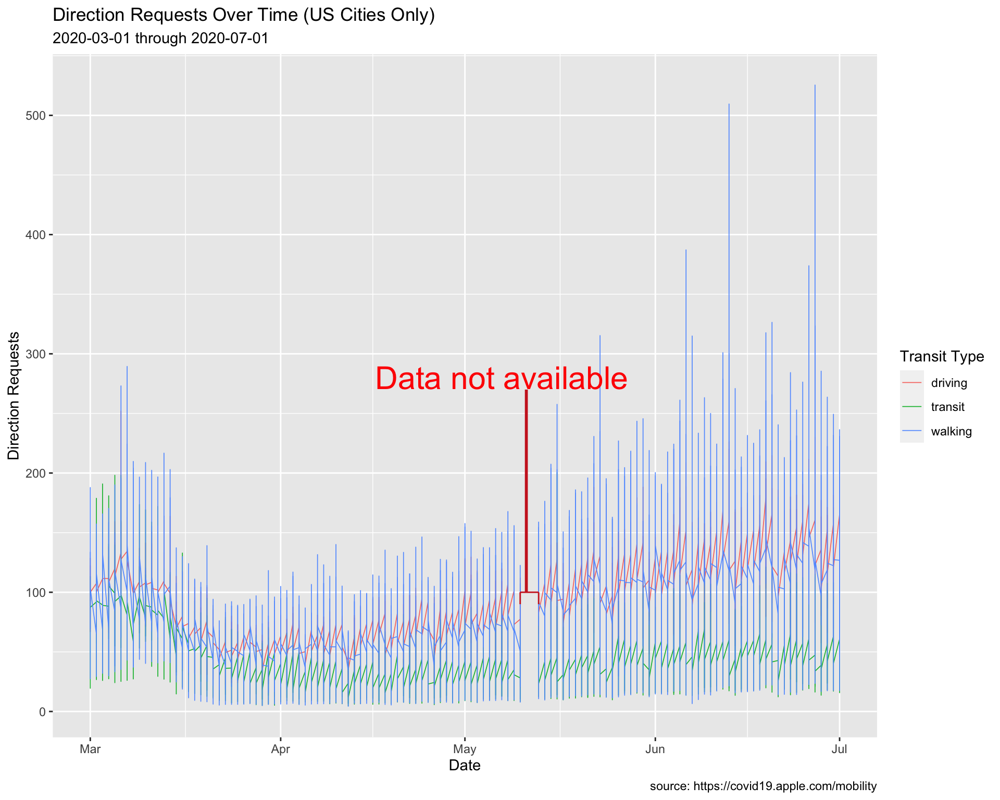
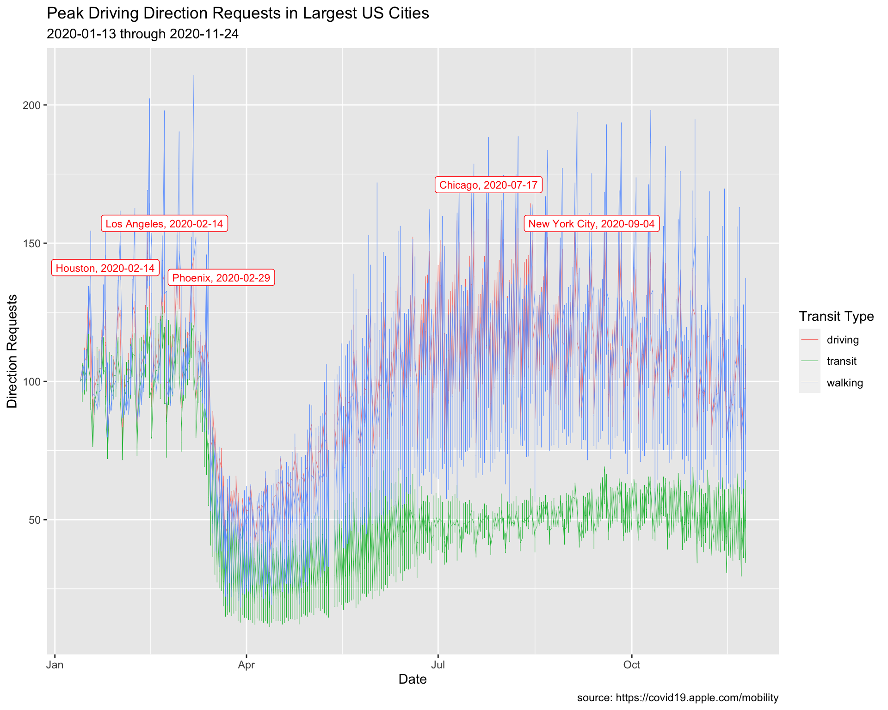
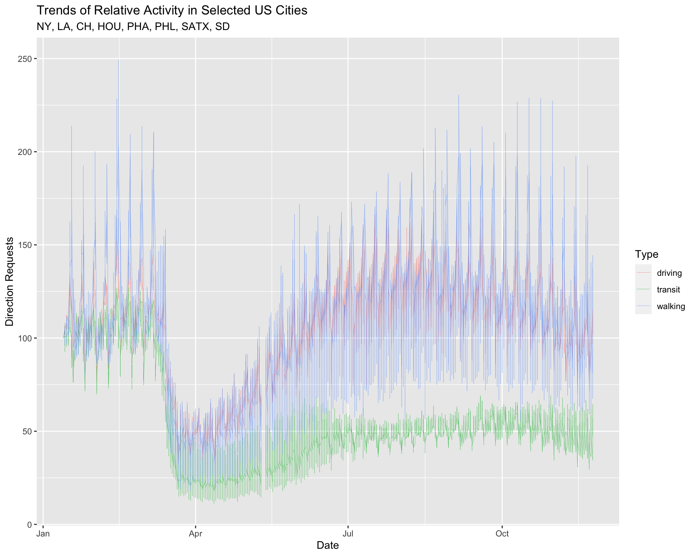

Data Visualization with ggplot2 (multiple variable visualizations)
1 Outline
- Import Apple Mobility Data
- Wrangle Apple Mobility Data
- Counting things
- Histograms
- Density plots
- Ridgeline plots
- Violin plots
2 Import TidyApple data
We’re going to import the data from the previous exercises.
TidyApple <- readr::read_csv("https://bit.ly/3deFcBy")3 Visualizing Trends
We’ve seen the distribution of dir_request, and how it varies across trans_type.
Now we’ll look at how the relationship between these two variables varies over in a subset of US cities and across a specific date range.
3.1 Focus on US Cities
We’ll start by narrowing down the data by filtering to only US cities.
3.1.1 exercise
Filter the geo_type to "city" and the country to "United States", and pass the date variable to skimr::skim()
TidyApple %>%
filter(geo_type == ___________ &
country == ___________) %>%
# use skimr to check date
skimr::skim(___________)3.1.2 solution
Here we reduce the dataset to only cities in the US, and we check the date range with skimr::skim(). If this looks OK, we assign to USCities
TidyApple %>%
filter(geo_type == "city" &
country == "United States") %>%
# use skimr to check date
skimr::skim(date)| Name | Piped data |
| Number of rows | 99538 |
| Number of columns | 7 |
| _______________________ | |
| Column type frequency: | |
| Date | 1 |
| ________________________ | |
| Group variables | None |
Variable type: Date
| skim_variable | n_missing | complete_rate | min | max | median | n_unique |
|---|---|---|---|---|---|---|
| date | 0 | 1 | 2020-01-13 | 2020-11-24 | 2020-06-19 | 317 |
TidyApple %>%
filter(geo_type == "city" &
country == "United States") -> USCities3.2 Updating Labels
We can see this date range is from 2020-01-13 to 2020-11-24.
3.2.1 exercise
Use paste0() to combine the first and last date in the filtered USCities dataset.
paste0(min(______________$____),
" through ",
max(______________$____))3.2.2 solution
paste0(min(USCities$date),
" through ",
max(USCities$date))## [1] "2020-01-13 through 2020-11-24"We want to specify this in our labels object (lab_line_update), so we will use the paste0() function to have the labels update every time the data changes.
labs(x = "Date",
y = "Direction Requests",
title = "Direction Requests Over Time (US Cities Only)",
subtitle = paste0(min(USCities$date),
" through ",
max(USCities$date)),
caption = "source: https://covid19.apple.com/mobility",
color = "Transit Type") -> lab_line_updateWe’re going to create a line graph of direction requests over time, colored by color.
3.2.3 exercise
Pass the filtered data to the geom_line(), mapping the following variables to their relative aesthetics:
datetoxdir_requesttoytrans_typeto bothgroupandcolor
Include lab_line_update to see how the new labels look!
USCities %>%
ggplot() +
geom_line(aes(x = __________, y = __________,
group = __________, color = __________)) +
__________3.2.4 solution
Let’s see what happens when we use lab_line_update.
USCities %>%
ggplot() +
geom_line(aes(x = date, y = dir_request,
group = trans_type, color = trans_type)) +
lab_line_update
The dates updated to the min and max date in USCities.
3.3 Adjusting Line Size
These lines in this graph are overlapping each other, so we will adjust the size to 0.20.
3.3.1 exercise
Change the size of the geom_line() (outside of aes()).
USCities %>%
ggplot() +
geom_line(aes(x = date, y = dir_request,
group = trans_type, color = trans_type),
size = ____________) +
lab_line013.3.2 solution
See below:
USCities %>%
ggplot() +
geom_line(aes(x = date, y = dir_request,
group = trans_type, color = trans_type),
size = 0.20) +
lab_line_update
Now the trends are easier to see.
3.4 Setting Date Range
We are going to only look at the trends between February and August of 2020, but we’re going to use an alternative method to filter the data and create the labels.
We will create two new objects (start_date and end_date), which we can use to narrow the dates using the filter() function (and anywhere else we need to use this date range).
This method is better than passing the dates as a character (i.e. in quotes), because we would only have to change it in one place. However, the option above makes better use of R functional programming syntax.
3.4.1 exercise
Pass the start_date and end_date to the as_date() functions, and take a look at the date variable with skimr::skim() and if it looks correct, assign it to USCitiesFebJul
# create date objects
start_date <- "2020-02-01"
end_date <- "2020-08-01"
# check with skimr
TidyApple %>%
filter(geo_type == "city" &
country == "United States",
date >= as_date(_____________) &
date <= as_date(_____________)) %>%
skimr::skim(_____________)3.4.2 solution
See below:
# create date objects
start_date <- "2020-02-01"
end_date <- "2020-08-01"
# check with skimr
TidyApple %>%
filter(geo_type == "city" &
country == "United States",
date >= as_date(start_date) &
date <= as_date(end_date)) -> USCitiesFebJul
USCitiesFebJul %>%
skimr::skim(date)| Name | Piped data |
| Number of rows | 57462 |
| Number of columns | 7 |
| _______________________ | |
| Column type frequency: | |
| Date | 1 |
| ________________________ | |
| Group variables | None |
Variable type: Date
| skim_variable | n_missing | complete_rate | min | max | median | n_unique |
|---|---|---|---|---|---|---|
| date | 0 | 1 | 2020-02-01 | 2020-08-01 | 2020-05-02 | 183 |
3.4.3 exercise
Create the new labels (lab_line_paste) with the paste0() function by passing both start_date and end_date.
lab_line_paste <- labs(x = "Date",
y = "Direction Requests",
title = "Direction Requests Over Time (US Cities Only)",
subtitle = paste0(___________, " through ", ___________),
caption = "source: https://covid19.apple.com/mobility",
color = "Transit Type")3.4.4 solution
lab_line_paste <- labs(x = "Date",
y = "Direction Requests",
title = "Direction Requests Over Time (US Cities Only)",
subtitle = paste0(start_date, " through ", end_date),
caption = "source: https://covid19.apple.com/mobility",
color = "Transit Type")
USCitiesFebJul %>%
ggplot() +
geom_line(aes(x = date, y = dir_request,
group = trans_type, color = trans_type),
# make these slightly larger...
size = 0.30) +
lab_line_paste
4 Adding Text to Graphs
We can see there is a gap in the direct request data (this is documented in the data source).
“Data for May 11-12 is not available and will appear as blank columns in the data set.”
We should communicate this gap with our audience, and we might include a text annotation on the graph so our audience isn’t distracted by the gap.
In the previous lesson, we introduced the ggrepel package to show the points on this graph of top performing pharmaceutical companies.

We’re going to use labels to annotate and highlight US cities between March and June of 2020.
4.1 Annotations
Being able to manually add text and annotations as layers to your graph makes it easier to communicate the nuances of your data to your audience. We are going to start by accounting for the missing data in TidyApple.
4.1.1 exercise
Build a dataset from TidyApple that only has US cities, and ranges from March 1, 2020 to June 30, 2020.
USCitiesMarJun <- TidyApple %>%
filter(geo_type == ___________ &
country == ___________,
date >= as_date(___________) &
date <= as_date(___________))
USCitiesMarJun %>%
skimr::skim()4.1.2 solution
See below:
USCitiesMarJun <- TidyApple %>%
filter(geo_type == "city" &
country == "United States",
date >= as_date("2020-03-01") &
date <= as_date("2020-07-01"))
USCitiesMarJun %>% skimr::skim()| Name | Piped data |
| Number of rows | 38622 |
| Number of columns | 7 |
| _______________________ | |
| Column type frequency: | |
| character | 5 |
| Date | 1 |
| numeric | 1 |
| ________________________ | |
| Group variables | None |
Variable type: character
| skim_variable | n_missing | complete_rate | min | max | empty | n_unique | whitespace |
|---|---|---|---|---|---|---|---|
| geo_type | 0 | 1 | 4 | 4 | 0 | 1 | 0 |
| region | 0 | 1 | 5 | 39 | 0 | 111 | 0 |
| trans_type | 0 | 1 | 7 | 7 | 0 | 3 | 0 |
| sub_region | 0 | 1 | 4 | 14 | 0 | 39 | 0 |
| country | 0 | 1 | 13 | 13 | 0 | 1 | 0 |
Variable type: Date
| skim_variable | n_missing | complete_rate | min | max | median | n_unique |
|---|---|---|---|---|---|---|
| date | 0 | 1 | 2020-03-01 | 2020-07-01 | 2020-05-01 | 123 |
Variable type: numeric
| skim_variable | n_missing | complete_rate | mean | sd | p0 | p25 | p50 | p75 | p100 | hist |
|---|---|---|---|---|---|---|---|---|---|---|
| dir_request | 628 | 0.98 | 82.06 | 41.11 | 4.37 | 50.87 | 74.38 | 109.11 | 525.44 | ▇▃▁▁▁ |
4.1.3 exercise
We’re going to build labels using the paste0() function. Fill in the appropriate dataset for the min() and max() date.
lab_annotate <- labs(x = "Date",
y = "Direction Requests",
title = "Direction Requests Over Time (US Cities Only)",
subtitle = paste0(min(______________$date),
" through ",
max(______________$date)),
caption = "source: https://covid19.apple.com/mobility",
color = "Transit Type")4.1.4 solution
See below:
lab_annotate <- labs(x = "Date",
y = "Direction Requests",
title = "Direction Requests Over Time (US Cities Only)",
subtitle = paste0(min(USCitiesMarJun$date),
" through ",
max(USCitiesMarJun$date)),
caption = "source: https://covid19.apple.com/mobility",
color = "Transit Type")4.1.5 exercise
The previous code for the graph has been added. We’re going to add the following layers:
Inside coord_cartesian():
- map
min(USCitiesMarJun$date)andmax(USCitiesMarJun$date)insidec()toxlim - map
min(USCitiesMarJun$dir_request, na.rm = TRUE)andmax(USCitiesMarJun$dir_request, na.rm = TRUE)insidec()toylim
Inside the # horizontal annotate():
- set
geomto"segment" - map
0.5tosize - map
"firebrick3"tocolor - map
lubridate::as_date("2020-05-10")tox - map
lubridate::as_date("2020-05-13")toxend - map
100toyandyend
Inside the # big vertical annotate():
- set
geomto"segment" - map
1tosize - map
"firebrick3"tocolor - map
lubridate::as_date("2020-05-11")tox - map
lubridate::as_date("2020-05-11")toxend - map
270toyand100toyend
Inside the # text annotate():
- set
geomto"text" - map
8tosize - map
"red"tocolor - map
0.5tohjust - map
lubridate::as_date("2020-05-07")tox - map
280toy - map
"Data not available"tolabel
USCitiesMarJun %>%
ggplot() +
geom_line(aes(x = date, y = dir_request,
group = trans_type, color = trans_type),
# make these slightly larger...
size = 0.30) +
# coordinate system
coord_cartesian(xlim = c(_______________, _______________),
ylim = c(_______________, na.rm = __________),
_______________, na.rm = __________))) +
# horizontal
annotate(geom = ___________, size = ___________, color = ___________,
x = ___________,
xend = ___________,
y = ___________,
yend = ___________) +
# big vertical
annotate(geom = ___________,
size = ___________,
color = ___________,
x = ___________,
xend = ___________,
y = ___________, yend = ___________) +
# text
annotate(geom = "text",
size = 8,
color = "red",
hjust = 0.5,
x = lubridate::as_date("2020-05-07"),
y = 280,
label = "Data not available") +
lab_annotate4.1.6 solution
# plot
USCitiesMarJun %>%
ggplot() +
geom_line(aes(x = date, y = dir_request,
group = trans_type, color = trans_type),
# make these slightly larger...
size = 0.30) +
# coordinate system
coord_cartesian(xlim = c(min(USCitiesMarJun$date),
max(USCitiesMarJun$date)),
ylim = c(min(USCitiesMarJun$dir_request, na.rm = TRUE),
max(USCitiesMarJun$dir_request, na.rm = TRUE))) +
# horizontal
annotate(geom = "segment",
size = 0.5,
color = "firebrick3",
x = lubridate::as_date("2020-05-10"),
xend = lubridate::as_date("2020-05-13"),
y = 100,
yend = 100) +
# big vertical
annotate(geom = "segment",
size = 1,
color = "firebrick3",
x = lubridate::as_date("2020-05-11"),
xend = lubridate::as_date("2020-05-11"),
y = 270, yend = 100) +
# text
annotate(geom = "text",
color = "red",
hjust = 0.5,
size = 8,
x = lubridate::as_date("2020-05-07"),
y = 280,
label = "Data not available") +
lab_annotate
4.1.7 exercise
Add a second and third vertical segment to create a fence or bracket for the dates with missing data.
# plot
USCitiesMarJun %>%
ggplot() +
geom_line(aes(x = date, y = dir_request,
group = trans_type, color = trans_type),
# make these slightly larger...
size = 0.30) +
# coordinate system
coord_cartesian(xlim = c(min(USCitiesMarJun$date),
max(USCitiesMarJun$date)),
ylim = c(min(USCitiesMarJun$dir_request, na.rm = TRUE),
max(USCitiesMarJun$dir_request, na.rm = TRUE))) +
# horizontal
annotate(geom = "segment",
size = 0.5,
color = "firebrick3",
x = lubridate::as_date("2020-05-10"),
xend = lubridate::as_date("2020-05-13"),
y = 100,
yend = 100) +
# big vertical
annotate(geom = "segment",
size = 1,
color = "firebrick3",
x = lubridate::as_date("2020-05-11"),
xend = lubridate::as_date("2020-05-11"),
y = 270, yend = 100) +
# text
annotate(geom = "text",
color = "red",
hjust = 0.5,
size = 8,
x = lubridate::as_date("2020-05-07"),
y = 280,
label = "Data not available") +
# second vertical
annotate(geom = "segment",
size = 0.5,
color = "firebrick3",
x = _____________________________,
xend = _____________________________,
y = _____________________________,
yend = _____________________________) +
# third vertical
annotate(geom = "segment",
size = 0.5,
color = "firebrick3",
x = _____________________________,
xend = _____________________________,
y = _____________________________,
yend = _____________________________) +
lab_annotate4.1.8 solution
See below:
# plot
USCitiesMarJun %>%
ggplot() +
geom_line(aes(x = date, y = dir_request,
group = trans_type, color = trans_type),
# make these slightly larger...
size = 0.30) +
# coordinate system
coord_cartesian(xlim = c(min(USCitiesMarJun$date),
max(USCitiesMarJun$date)),
ylim = c(min(USCitiesMarJun$dir_request, na.rm = TRUE),
max(USCitiesMarJun$dir_request, na.rm = TRUE))) +
# horizontal
annotate(geom = "segment",
size = 0.5,
color = "firebrick3",
x = lubridate::as_date("2020-05-10"),
xend = lubridate::as_date("2020-05-13"),
y = 100,
yend = 100) +
# big vertical
annotate(geom = "segment",
size = 1,
color = "firebrick3",
x = lubridate::as_date("2020-05-11"),
xend = lubridate::as_date("2020-05-11"),
y = 270, yend = 100) +
# text
annotate(geom = "text",
color = "red",
hjust = 0.5,
size = 8,
x = lubridate::as_date("2020-05-07"),
y = 280,
label = "Data not available") +
# second vertical
annotate(geom = "segment",
size = 0.5,
color = "firebrick3",
x = lubridate::as_date("2020-05-10"),
xend = lubridate::as_date("2020-05-10"),
y = 100, yend = 90) +
# third vertical
annotate(geom = "segment",
size = 0.5,
color = "firebrick3",
x = lubridate::as_date("2020-05-13"),
xend = lubridate::as_date("2020-05-13"),
y = 100, yend = 90) +
lab_annotate
4.2 Plotting area
Another option is to use geom_rect() to black out the missing data.
# plot
USCitiesMarJun %>%
ggplot() +
geom_line(aes(x = date, y = dir_request,
group = trans_type, color = trans_type),
# make these slightly larger...
size = 0.30) +
# coordinate system
coord_cartesian(xlim = c(min(USCitiesMarJun$date),
max(USCitiesMarJun$date)),
ylim = c(min(USCitiesMarJun$dir_request, na.rm = TRUE),
max(USCitiesMarJun$dir_request, na.rm = TRUE))) +
geom_rect(xmin = lubridate::as_date("2020-05-10"),
xmax = lubridate::as_date("2020-05-12"),
ymin = -Inf,
ymax = Inf,
color = NA) +
geom_text(x = as.Date("2020-05-11"),
y = 100, label = "Data Not Available",
angle = 90, color = "white") +
lab_annotate
4.3 Labeling Values
Max Driving Requests
The code below creates a subset of the data (TopUSCities). We will use this to add the labels.
TopUSCities <- TidyApple %>%
filter(country == "United States" &
region %in% c("New York City", "Los Angeles",
"Chicago", "Houston", "Phoenix"))
TopUSCities4.3.1 exercise
Create MaxUSCitiesDriving by filtering trans_type, grouping on the region variable, and using dplyr::slice_max() to get the top value in dir_request.
TopUSCities %>%
filter(trans_type == __________) %>%
group_by(__________) %>%
slice_max(dir_request) %>%
ungroup() -> MaxUSCitiesDriving
MaxUSCitiesDriving4.3.2 solution
See below:
TopUSCities %>%
filter(trans_type == "driving") %>%
group_by(region) %>%
slice_max(dir_request) %>%
ungroup() -> MaxUSCitiesDriving
MaxUSCitiesDriving4.3.3 exercise
Create graph labels:
assign
"Peak Driving Direction Requests in Largest US Cities"totitleassign
"Max Driving Direction Requests & Date"tosubtitle
lab_line_max_drivers <- labs(
x = "Date",
y = "Direction Requests",
title = "_________________________________",
subtitle = paste0(min(___________$date),
" through ",
max(___________$date)),
caption = "source: https://covid19.apple.com/mobility",
color = "Transit Type")4.3.4 solution
See below:
lab_line_max_drivers <- labs(
x = "Date",
y = "Direction Requests",
title = "Peak Driving Direction Requests in Largest US Cities",
subtitle = paste0(min(TopUSCities$date),
" through ",
max(TopUSCities$date)),
caption = "source: https://covid19.apple.com/mobility",
color = "Transit Type")4.3.5 exercise
Create max_driving_labels using paste0() with region and date.
MaxUSCitiesDriving %>%
mutate(
max_driving_labels = paste0(______, ", ", ______)) -> MaxUSCitiesDriving
MaxUSCitiesDriving %>%
select(max_driving_labels)4.3.6 solution
See below:
MaxUSCitiesDriving %>%
mutate(max_driving_labels = paste0(region, ", ", date)) -> MaxUSCitiesDriving
MaxUSCitiesDriving %>%
select(max_driving_labels)4.3.7 exercise
Create a line plot, assigning the following values in geom_label_repel():
- set the
dataargument toMaxUSCitiesDriving
Inside the aes():
- map
labeltomax_driving_labels
Outside the aes()
- map
colorto"red" - map
sizeto3
TopUSCities %>%
ggplot() +
geom_line(aes(x = date, y = dir_request,
group = trans_type,
color = trans_type),
# make these slightly smaller again...
size = 0.15) +
geom_label_repel(data = _____________,
aes(x = date, y = dir_request,
label = _____________),
# set color and size...
color = _____,
size = _) +
lab_line_max_drivers4.3.8 solution
See below:
TopUSCities %>%
ggplot() +
geom_line(aes(x = date, y = dir_request,
group = trans_type,
color = trans_type),
# make these slightly smaller again...
size = 0.15) +
geom_label_repel(data = MaxUSCitiesDriving,
aes(x = date, y = dir_request,
label = max_driving_labels),
# set color and size...
color = "red",
size = 3) +
lab_line_max_drivers
4.4 Labeling Values 2
Min Walking Requests
We are going to repeat the process above, but use the minimum value for walking direction requests.
4.4.1 exercise
filter()thetrans_typeto"walking"group_by()theregion- use
slice_min()to get the minimum value fordir_request - Assign to
MinUSCitiesWalking
TopUSCities %>%
filter(________ == ________) %>%
group_by(________) %>%
slice_min(dir_request) %>%
ungroup() -> MinUSCitiesWalking
MinUSCitiesWalking4.4.2 solution
See below:
TopUSCities %>%
filter(trans_type == "walking") %>%
group_by(region) %>%
slice_min(dir_request) %>%
ungroup() -> MinUSCitiesWalking
MinUSCitiesWalking4.4.3 exercise
- assign
"Lowest Walking Direction Requests in Largest US Cities"totitle
lab_line_min_walking <- labs(
x = "Date",
y = "Direction Requests",
title = "__________________________________________",
subtitle = paste0(min(___________$date),
" through ",
max(___________$date)),
caption = "source: https://covid19.apple.com/mobility",
color = "Transit Type")4.4.4 solution
See below:
lab_line_min_walking <- labs(
x = "Date",
y = "Direction Requests",
title = "Lowest Walking Direction Requests in Largest US Cities",
subtitle = paste0(min(TopUSCities$date),
" through ",
max(TopUSCities$date)),
caption = "source: https://covid19.apple.com/mobility",
color = "Transit Type")4.4.5 exercise
Create min_walking_labels using paste0() with region and date
MinUSCitiesWalking %>%
mutate(min_walking_labels = paste0(_____, ", ", _____)) -> MinUSCitiesWalking
MinUSCitiesWalking4.4.6 solution
See below:
MinUSCitiesWalking %>%
mutate(min_walking_labels = paste0(region, ", ", date)) -> MinUSCitiesWalking
MinUSCitiesWalking4.4.7 exercise
Create a line plot, assigning the following values in geom_label_repel():
- set
datatoMinUSCitiesWalking
Inside aes():
- map
min_walking_labelstolabel
Outside aes():
- map
"blue"tocolor - map
3tosize
TopUSCities %>%
ggplot() +
geom_line(aes(x = date, y = dir_request,
group = trans_type,
color = trans_type),
# make these slightly smaller again...
size = 0.15) +
geom_label_repel(data = ____________,
aes(x = date, y = dir_request,
label = ____________),
# set color and size...
color = _______,
size = _) +
lab_line_min_walking4.4.8 solution
See below:
TopUSCities %>%
ggplot() +
geom_line(aes(x = date, y = dir_request,
group = trans_type,
color = trans_type),
# make these slightly smaller again...
size = 0.15) +
geom_label_repel(data = MinUSCitiesWalking,
aes(x = date, y = dir_request,
label = min_walking_labels),
# set color and size...
color = "blue",
size = 3) +
lab_line_min_walking
5 Reference lines
We’re going to focus on the top 8 cites according to their population (the date of this writing is 2020-11-26).
5.1 Top Cities
Top Cities
We’re going to introduce another filtering method in this section to create the TopUSCities dataset.
5.1.1 exercise
Store top eight cities in the focus_on vector and use it to filter the TidyApple dataset.
focus_on <- c("New York City", "Los Angeles",
"Chicago", "Houston",
"Phoenix", "Philadelphia",
"San Antonio", "San Diego")
TopUSCities <- TidyApple %>%
filter(region %in% _____________)
TopUSCities %>% glimpse(60)5.1.2 solution
See below:
focus_on <- c("New York City", "Los Angeles",
"Chicago", "Houston",
"Phoenix", "Philadelphia",
"San Antonio", "San Diego")
TopUSCities <- TidyApple %>%
filter(region %in% focus_on)
TopUSCities %>% glimpse(60)## Rows: 7,608
## Columns: 7
## $ geo_type <chr> "city", "city", "city", "city", "city"…
## $ region <chr> "Chicago", "Chicago", "Chicago", "Chic…
## $ trans_type <chr> "driving", "driving", "driving", "driv…
## $ sub_region <chr> "Illinois", "Illinois", "Illinois", "I…
## $ country <chr> "United States", "United States", "Uni…
## $ date <date> 2020-01-13, 2020-01-14, 2020-01-15, 2…
## $ dir_request <dbl> 100.00, 103.68, 104.45, 108.72, 132.80…5.1.3 exercise
Graph Labels
We’re going to place date on the x axis, and dir_request on the y. The tite will reflect a general description of what we’re expecting to see, and we’ll list the cities in the subtitle. color will be used to give a better description than trans_type.
Fill in names for the x, y, and color.
lab_top_cities <- labs(x = _____, y = __________,
title = "Trends of Relative Activity in Selected US Cities",
subtitle = "NY, LA, CH, HOU, PHA, PHL, SATX, SD",
color = _________)5.1.4 solution
See below:
lab_top_cities <- labs(x = "Date", y = "Direction Requests",
title = "Trends of Relative Activity in Selected US Cities",
subtitle = "NY, LA, CH, HOU, PHA, PHL, SATX, SD",
color = "Type")5.2 Set Global aes()
We’re going to set the global graph aesthetics inside ggplot(aes()) using our labels as a guide. This will serve as a base layer for us to add our reference line to!
5.2.1 exercise
Global aes()
Map
trans_typetogroupandcolorAlso add a
geom_line()layer with thesizeset to0.1(not inside theaes()!)
TopUSCities %>%
ggplot(aes(x = date, y = dir_request,
_____ = __________,
_____ = __________)) +
____________(_____ = ___) +
lab_top_cities5.2.2 solution
See below:
TopUSCities %>%
ggplot(aes(x = date, y = dir_request,
group = trans_type,
color = trans_type)) +
geom_line(size = 0.1) +
lab_top_cities
5.3 Reference Line Layer
The documentation for the data tells us each dir_request has a baseline value of 100. We’re going to add this as a reference line on the graph using ggplot2::geom_hline().
5.3.1 exercise
The geom_hline() function takes yintercept, size, and color arguments.
- use our baseline value of
100as theyintercept - set the
sizeto0.2 - make the
colorof this line"gray20"
TopUSCities %>%
ggplot(aes(x = date, y = dir_request,
group = trans_type,
color = trans_type)) +
geom_line(size = 0.1) +
# add reference line
geom_hline(yintercept = ___, size = ___, color = _______) +
lab_top_cities5.3.2 solution
See below:
TopUSCities %>%
ggplot(aes(x = date, y = dir_request,
group = trans_type,
color = trans_type)) +
geom_line(size = 0.1) +
geom_hline(yintercept = 100, size = 0.2, color = "gray20") +
lab_top_cities
Reference lines are helpful when we want to examine trends in relation to a particular value.